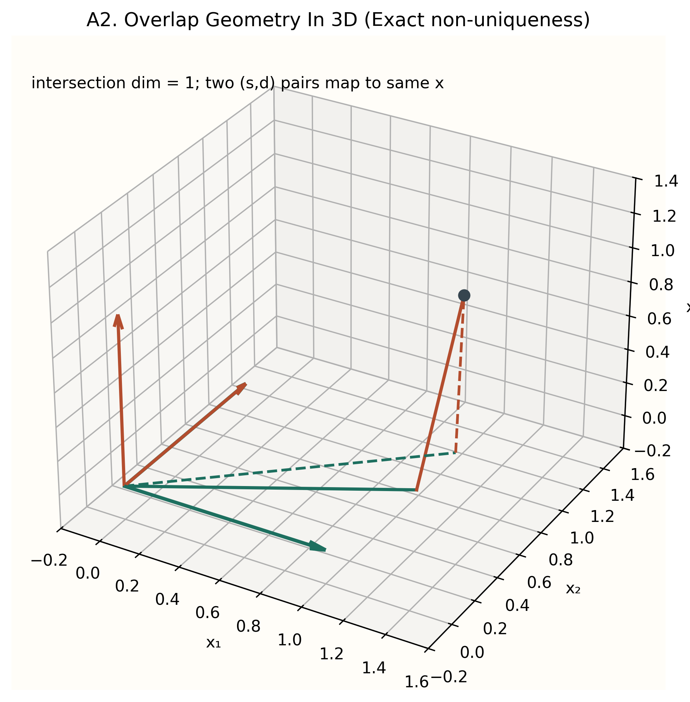
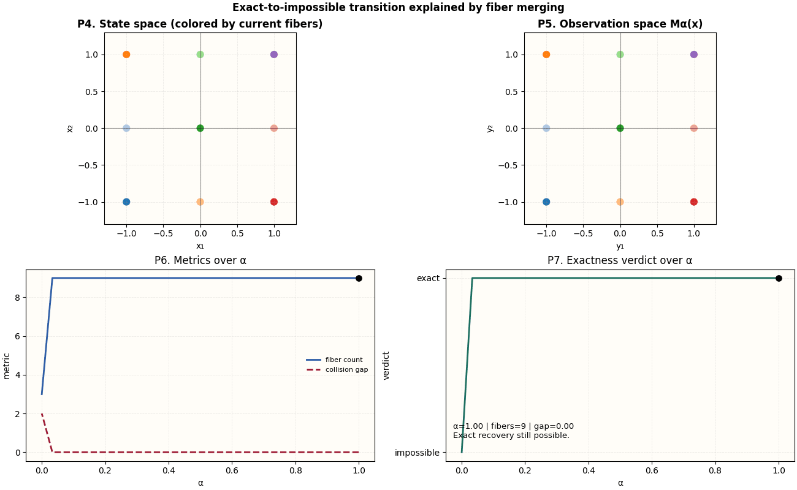
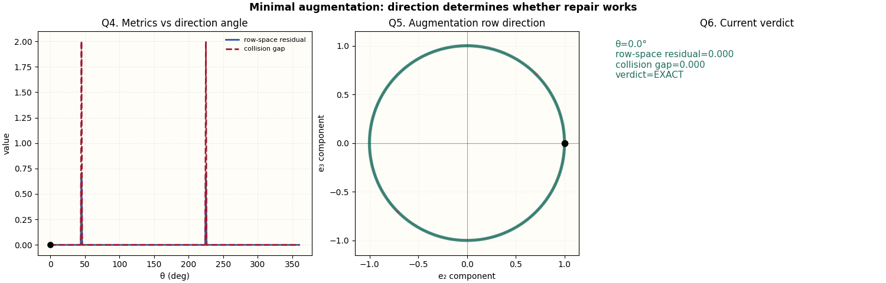
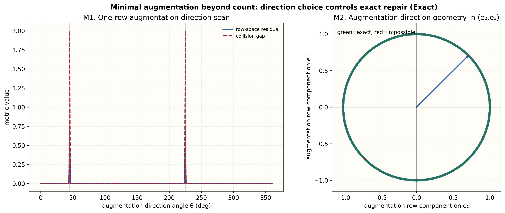

Narrative map of the whole program

Use this as the roadmap. The remaining sections fill in each step with exact examples and theorem-backed visuals.
The repo studies situations where a state has a protected part S and a disturbance part D. We observe through some map M, then ask whether we can recover the protected target exactly, asymptotically, or not at all.
x = s + d, with s ∈ S, d ∈ D; recovery depends on how M collapses states and whether the target survives that collapse.


If two different underlying states produce the same observation, they are in the same fiber. Exact recovery is possible only when the target has the same value on each fiber.
Observation can erase distinctions. If the erased distinctions contain what you care about, no algorithm can recover it exactly.



Two systems can have the same measurement count/rank but opposite outcomes: one exactly recoverable, the other impossible. Alignment and row-space inclusion are the deciding factors.


You can sometimes fix an impossible setup by adding measurements, but not any measurements. The direction of added rows controls whether repair succeeds.
δ(O,L;F) = rank([OF;LF]) - rank(OF) gives how much augmentation is needed. Direction scans show which augmentations actually realize exactness.





Fixing divergence is not enough on bounded domains. Boundary-normal compatibility creates a real obstruction, even when periodic-style transplant looks tempting.


Some architectures cannot recover exactly at finite time but can suppress error asymptotically. Rates depend on spectral structure and observability geometry.


| Question | Best visual(s) | Where in repo docs | Where in workbench/program |
|---|---|---|---|
| What is OCP doing at a high level? | R, A | start-here, theorem spine | workbench index |
| Why can exact recovery fail? | B, P, D, I | fiber overview | Structural Discovery Studio |
| Why rank alone is not enough? | D, I, J | theorem normalization | Benchmark / Validation Console |
| How do we repair impossible cases? | E, Q, M, K | minimal structure classification | Structural Discovery Studio |
| How does periodic vs bounded differ? | F, N | restricted-flow recoverability | CFD modules in workbench |
| What about dynamics and rates? | L, G | dynamic correction layer | Continuous Generator Lab |
All visuals in this story are generated from code and can be rebuilt from scripts/visuals/generate_visuals.py.
Visual Gallery (all figures) | Visual Atlas PDF | Contact Sheet PNG
{kind=link}